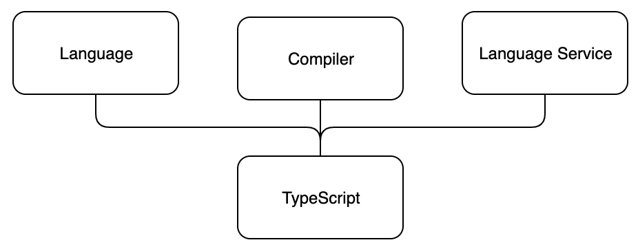

TypeScript是一种编程语言，由微软创建，用于大规模的JavaScript开发。例如，微软的Azure管理门户（120万行代码）和Visual Studio代码（30万行代码）都是用TypeScript编写的。为了支持构建大规模的JavaScript应用，TypeScript提供了诸如更好的开发时工具、静态代码分析、编译时类型检查和代码级文档等功能。
Main principle
TypeScript是JavaScript的一个类型超集，最终它被编译成普通的JavaScript代码。程序员甚至可以决定生成代码的版本，只要它是ECMAScript 3或更新的。TypeScript是JavaScript的一个超集，这意味着它包括了JavaScript的所有特性和
它自己的额外功能以及。换句话说，所有现有的JavaScript代码实际上是有效的TypeScript。
TypeScript由三个独立的、但又相互满足的部分组成。
- 语言
- 编译器
- 语言服务

语言由语法、关键字和类型注释组成。语法与JavaScript语法相似但不相同。从TypeScript的三个部分来看，程序员与语言有最直接的接触。
编译器负责类型信息的清除（即删除类型信息）和代码转换。代码转换使TypeScript代码被转译成可执行的JavaScript。所有与类型相关的东西都在编译时被移除，所以TypeScript实际上并不是真正的静态类型代码。
传统上，编译意味着代码从人类可读的格式转换为机器可读的格式。在TypeScript中，人类可读的源代码被转换为另一个人类可读的源代码，所以正确的术语实际上应该是transpiling。然而，在这种情况下，编译一直是最常用的术语，所以我们将继续使用它。
编译器也执行静态代码分析。如果它发现有理由这样做，它可以发出警告或错误，而且它可以被设置为执行额外的任务，如将生成的代码合并到一个文件中。
语言服务从源代码中收集类型信息。开发工具可以使用这些类型信息来提供智能提示、类型提示和可能的重构替代方案。
TypeScript key language features
在本节中，我们将描述TypeScript语言的一些关键特征。其目的是让你对TypeScript的
的关键特性，以帮助你理解本课程中将要出现的更多内容。
Type annotations
TypeScript中的类型注解是一种轻量级的方式来记录函数或变量的预期契约。
在下面的例子中，我们定义了一个birthdayGreeter函数，它接受了两个参数：一个是字符串类型，一个是数字类型。
该函数将返回一个字符串。
const birthdayGreeter = (name: string, age: number): string => {
return `Happy birthday ${name}, you are now ${age} years old!`;
};
const birthdayHero = "Jane User";
const age = 22;
console.log(birthdayGreeter(birthdayHero, age));
Structural typing
TypeScript是一种结构化类型的语言。在结构化类型中，如果第一个元素的类型中的每一个特征，在第二个元素的类型中存在一个相应的和相同的特征，那么两个元素被认为是彼此兼容的。如果两个类型相互兼容，则被认为是相同的。
Type inference
如果没有指定类型，TypeScript编译器可以尝试推断出类型信息。变量的类型可以根据它的分配值和它的用途来推断。类型推断发生在初始化变量和成员、设置参数默认值和确定函数返回类型时。
例如，考虑函数add。
const add = (a: number, b: number) => {
/* The return value is used to determine
the return type of the function */
return a + b;
}
该函数的返回值的类型是通过回溯代码到返回表达式来推断的。返回表达式对参数a和b进行加法运算。我们可以看到，根据它们的类型，a和b是数字。因此，我们可以推断出返回值的类型为number。
作为一个更复杂的例子，让我们考虑下面的代码。如果你以前没有使用过TypeScript，这个例子可能有点复杂。但不要担心，你可以暂时安全地跳过它。
type CallsFunction = (callback: (result: string) => any) => void;
const func: CallsFunction = (cb) => {
cb('done');
cb(1);
}
func((result) => {
return result;
});
首先，我们有一个名为CallsFunction的类型别名声明。
CallsFunction是一个有一个参数的函数类型。callback。参数callback属于函数类型，它接受一个字符串参数并返回任意值。 正如我们将在本章节后面学到的，any是一种 "通配符 "类型，可以代表任何类型。另外，CallsFunction返回void类型。
接下来，我们定义func类型的CallsFunction的函数。从这个函数的类型，我们可以推断出它的参数函数cb只接受一个字符串参数。为了证明这一点，还有一个例子，即用数字值调用参数函数，这在TypeScript中会导致错误。
最后，我们调用func，给它提供以下函数作为参数。
(result) => {
return result;
}
尽管参数函数的类型没有被定义，我们可以从调用环境中推断出参数result是字符串类型。
Type erasure
TypeScript在编译过程中删除了所有类型系统结构。
输入。
let x: SomeType;
输出。
let x;
这意味着在运行时没有任何类型信息被保留下来--没有任何东西表明某个变量x被声明为SomeType类型。
对于那些习惯于广泛使用反射或其他元数据系统的程序员来说，缺乏运行时的类型信息可能是令人惊讶的。
Why should one use TypeScript?
在不同的论坛上，你可能会偶然发现很多不同的论点，无论是支持还是反对TypeScript。事实可能是：这取决于你对TypeScript提供的功能的需求和使用。无论如何，这里有一些我们认为使用TypeScript可能有一些优势的理由。
首先，TypeScript提供类型检查和静态代码分析。我们可以要求值必须是某种类型，并让编译器对错误使用它们发出警告。这可以减少运行时的错误，你甚至可以减少项目中所需要的单元测试的数量，至少关于纯类型测试。
静态代码分析不仅对错误的类型使用提出警告，而且还对其他错误提出警告，如拼错变量或函数名，或试图使用超出其范围的变量。
TypeScript的第二个优势是，代码中的类型注释可以作为一种类型的代码级文档发挥作用。
从函数签名中很容易检查出该函数可以消费什么样的参数以及它将返回什么样的数据类型。这种以类型注解为基础的文档总是最新的，它使新的程序员更容易开始在现有项目上工作。当回到一个老项目时，它也是有帮助的。
类型可以在整个代码库中被重用，对类型定义的改变会自动反映在该类型被使用的地方。有人可能会说，你可以通过JSDoc实现类似的代码级文档，但它与代码的联系没有TypeScript的类型那么紧密，因此可能更容易脱节，而且也更啰嗦。
TypeScript的第三个优势是，当IDE知道你正在处理哪些类型的数据时，它们可以提供更具体、更智能的智能提示。
当你需要重构你的代码时，所有这些功能都非常有帮助。静态代码分析会警告你代码中的任何错误，而智能检测可以给你提示可用的属性，甚至可能的重构选项。代码级的文档帮助你理解现有的代码。
在TypeScript的帮助下，只要改变它的配置，就可以很容易地在早期阶段开始使用最新的JavaScript语言特性。
What does TypeScript not fix?
如上所述，TypeScript的类型注释和类型检查只存在于编译时，在运行时不再存在。即使编译器没有抛出任何错误，运行时的错误仍然是可行的。
这些运行时错误在处理外部输入时特别常见，比如从网络请求中收到的数据。
最后，下面我们列出了许多人在使用TypeScript时遇到的一些问题，注意到这些问题也许是好事。
Incomplete, invalid or missing types in external libraries
当使用外部库时，你可能会发现一些库的类型声明缺失或在某些方面无效。大多数情况下，这是由于库不是用TypeScript编写的，而且手动添加类型声明的人没有做得很好。在这些情况下，你可能需要自己定义类型声明。
然而，很有可能有人已经为你使用的包添加了类型。一定要先查看DefinitelyTyped或其GitHub页面。它们可能是类型声明文件的最流行的来源。
否则，你可能想先熟悉一下TypeScript自己的关于类型声明的文档。
Sometimes, type inference needs assistance
TypeScript中的类型推理是相当好的，但不是很完美。
有时候，你可能觉得你已经完美地声明了你的类型，但是编译器仍然告诉你这个属性不存在或者这种用法是不允许的。在这种情况下，你可能需要通过做一些类似于 "额外的 "类型检查来帮助编译器，但要注意类型转换和类型保护。
使用类型转换或类型守卫，你基本上是向编译器保证值确实是你声明的类型。
你可能想看看TypeScript关于类型断言和类型守卫的文档。
Mysterious type errors
由类型系统给出的错误有时可能相当难以理解，特别是当你使用复杂的类型时。
根据经验，TypeScript的错误信息在信息的最后有最有用的信息。
当遇到长的令人困惑的信息时，从最后开始阅读。